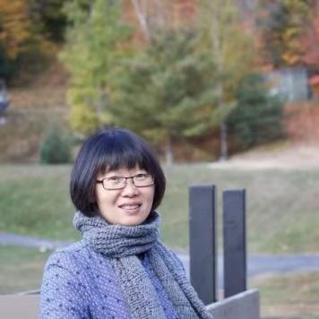
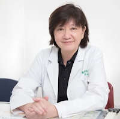
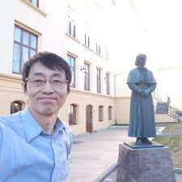
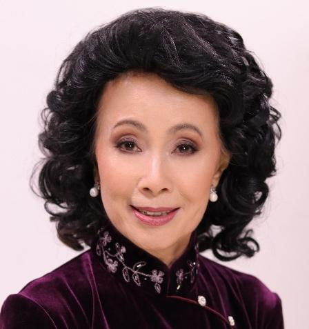
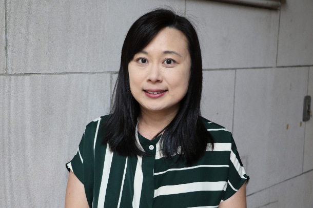

Prof. Amos Lian, Ph.D.
Senior international psychologist and educator
Biography
[Profile] Dr. Amos Lian is a senior psychologist with more than ten years of international clinical practice. His professional footprint spans the United Kingdom, Malaysia and Singapore. Beyond clinical work, he is a dedicated educator committed to training the next generation of mental health professionals.
[International academic and clinical foundations] Dr. Lian's academic background is both deep and diverse. He completed rigorous training in integrative counseling psychology in the UK, then earned his doctorate in trauma therapy in Malaysia. He further pursued specialist training in psychoanalysis and art therapy in the United States. This blend of Western scientific frameworks and Eastern clinical experience allows him to address a wide range of complex psychological issues.
[Academic leadership and faculty development] In higher education, Dr. Lian has shown exceptional leadership. He served as Head of the Department of Psychology at Raffles University in Malaysia, where he founded the university's psychology clinic. He was subsequently appointed as Associate Professor and Program Director of the Master's program in Clinical Mental Health Counseling at Columbia International University, overseeing the quality of professional training.
[Authoritative credentials and global collaboration] Dr. Lian holds multiple top-tier credentials: Chartered Psychologist of the British Psychological Society (BPS); Certified Psychoanalytic Counselor of the American Psychoanalytic Association (APsaA). His scholarly contributions are indexed in Scopus and Web of Science. He maintains active research collaborations with Yale University, Harvard Medical School, the University of Hong Kong and other world-leading institutions.
Core Expertise

Harold G. Koenig, MD, M.H.Sc.
World-leading authority on spirituality and health
Biography
[Profile] Dr. Harold G. Koenig is a legendary figure in psychiatry. He is Professor of Psychiatry and Behavioral Sciences at Duke University School of Medicine and the founding figure of the modern field of spirituality and health.
[World-leading academic standing] In 2024 Scholars GPS named him the world's #1 lifetime academic contributor in the field of spirituality, and ranked him 29th globally in psychiatry. Research.com lists him among the top 10 social scientists and humanities scholars worldwide. He has authored close to 700 scientific papers and 70 books, and is the most-cited scholar in his field.
[From Ivy League to the front line] Dr. Koenig holds degrees from Stanford University and the University of California, San Francisco (UCSF). National advisor: he has testified before the U.S. Senate and House of Representatives on the public-health impact of spiritual life, and was invited to the White House for multiple consultations in 2025. Military expertise: as an advocate of "Spiritual Readiness," he has trained thousands of U.S. Navy, Marine and Coast Guard chaplains, and has advised Ukrainian military leaders on suicide prevention and moral injury. Global guest faculty: he holds visiting professorships at universities in Saudi Arabia, China (Ningxia Medical University) and Iran.
[Core contribution: a bridge between science and faith] His Handbook of Religion and Health is regarded as the definitive reference of the field. Dr. Koenig has transformed spirituality and religion — once treated as outside science — into a clinically evidence-based discipline, demonstrating that spiritual health can reduce loneliness, build resilience and help heal deep psychological wounds.
[Approach: rigorous medicine with deep humanity] Even at the peak of academic influence, Dr. Koenig remains devoted to clinical work. He communicates expert knowledge in The New York Times, NPR and Time, while continuing to serve patients at the Duke clinic. He lets the data speak, but always with deep compassion — committed to ensuring that every patient finds spiritual support alongside biological treatment.
Core Contributions

Deqiong Ma, MD, Ph.D.
Clinical Assistant Professor, Yale School of Medicine
Biography
Prof. Deqiong Ma (MD, Ph.D.) is Clinical Assistant Professor at Yale School of Medicine and a highly influential Chinese-American scientist and clinical diagnostic specialist in clinical molecular and cytogenetics.
1. Core appointments Department of Genetics, Yale School of Medicine: Clinical Assistant Professor. Yale DNA Diagnostic Lab: Associate Director. The lab is a leading clinical genetic testing center, where Prof. Ma is responsible for the interpretation and diagnosis of complex genomic data.
2. Academic and career trajectory Prof. Ma's career spans China, Singapore, Australia and the United States, reflecting an extraordinarily international academic outlook. Early medical training: graduated from Tongji Medical University in Wuhan (now part of Huazhong University of Science and Technology) and served five years as a pediatric resident at Hubei Provincial Hospital — a foundation that has informed her later genetic diagnostic work. International graduate study: Master's in Physiology at the National University of Singapore and Ph.D. at Australia's Menzies Research Institute, focused on bone biology and metabolism. Top-tier research and translation: postdoctoral and research-faculty appointments at Duke University and the University of Miami, focused on human genetics. Yale clinical career: after ABMGG fellowship training at Albert Einstein College of Medicine in New York, she joined Yale in 2015 and rose quickly to a leadership role at the DNA Diagnostic Lab.
3. Credentials and scholarly achievements Prof. Ma is one of relatively few experts holding dual ABMGG board certification, with the highest level of practice qualifications in clinical molecular genetics (using DNA technology to diagnose genetic disease) and clinical cytogenetics (chromosomal abnormalities and disease). She has received multiple Young Investigator and Outstanding Research awards, particularly for work on metabolic bone disease and the optimization of genetic testing.
4. Contributions and impact Solving difficult diagnoses: she has advanced exome-sequencing methodology, with breakthrough insights into hard-to-diagnose conditions such as Autosomal Dominant Polycystic Kidney Disease (ADPKD). Bridge between clinic and academia: as an academic clinician, Prof. Ma not only interprets data in the lab but also trains the next generation of medical geneticists.
Prof. Ma exemplifies the path from clinician to leading genetic diagnostic scientist. Her deep pediatric background combined with her expertise in molecular genetics enables her to pinpoint disease-causing mechanisms within vast genomic datasets.
Core Expertise

Prof. Feng-Yi Kuo, Ph.D.
Senior expert at Harvard Medical School
Biography
[Profile] Prof. Feng-Yi Kuo serves in the Department of Psychiatry at Harvard Medical School. She is an internationally recognized doctor of occupational therapy, educator and clinical specialist, and one of relatively few professionals to hold both the U.S. Registered Occupational Therapist (OTR) and Certified Psychiatric Rehabilitation Practitioner (CPRP) credentials.
[Top-tier academic and clinical profile] Before Harvard, Prof. Kuo conducted postdoctoral research at the UCLA Neuroscience Research Institute and held a senior position at the Cleveland Clinic — ranked first in the nation. She also served as Clinical Professor at Indiana University School of Medicine, translating extensive clinical practice into a foundation for medical education.
[Cross-disciplinary therapeutic toolkit] Autism and social challenges: certified instructor of the globally recognized UCLA PEERS® program and proficient in international gold-standard tools such as ADOS-2. Child development and preterm care: expertise in sensory integration (SIPT), oral-motor assessment (Beckman) and feeding techniques for premature infants — providing comprehensive scientific intervention for development. Trauma and mindfulness: as a trained mindfulness facilitator, she integrates global mental-health standards from the UNHCR and Harvard Medical School to support recovery and build psychological resilience.
[Recognition and ethos] Prof. Kuo has received the AOTF (American Occupational Therapy Foundation) Community and Volunteer Service Award. She advocates being "rooted in scientific evidence and oriented by human warmth," translating complex brain science into everyday opportunities for recovery.
Core Expertise

Yu-Yu Wu, MD
Senior child mental health expert and faculty trainer
Biography
[Profile] Dr. Yu-Yu Wu is a leading expert in child psychiatry in Taiwan, currently director of the Yu-Ning Mind & Body Clinic and an attending physician in child psychiatry at Linkou Chang Gung Memorial Hospital. What sets her apart is the combination of a strong medical background with a Master's in Special Education from the United States, allowing her to support children from both medical and educational perspectives.
[Authoritative background and international perspective] Dr. Wu's career spans top institutions at home and abroad. Top-tier research experience: former Research Fellow at the National Taiwan University Hospital Center for Child Mental Health and at the Yale Child Study Center, bringing leading-edge child psychiatry to Taiwan. Senior clinical leadership: long-time Director of Child Psychiatry at Chang Gung Memorial Hospital, and a board member of the Taiwanese Society of Child and Adolescent Psychiatry.
[Core expertise: international gold standards in autism] Dr. Wu is one of very few authorities in Taiwan certified as an "international independent training instructor" for ADOS-2 (Autism Diagnostic Observation Schedule, 2nd ed.) and ADI-R (Autism Diagnostic Interview-Revised), responsible not only for diagnosis but for training other professionals in these gold-standard tools. Whole-person care and special-education integration: drawing on her special-education background, she integrates medical interventions with educational strategies, helping families and schools find the best approach for each child.
[Style: meticulous, precise, empathetic] In clinic and in training, Dr. Wu is both rigorous and supportive. Her diagnostic work goes beyond symptoms to focus on each child's adaptation and growth at school and at home, and she has played a leading role in raising diagnostic standards across the field.
Core Expertise

Prof. Chuan-Chiu Chou, Ph.D.
Long-term care leader bridging international perspective and local practice
Biography
[Profile] Dr. Chuan-Chiu Chou is a leader who has worked in aging and long-term care for more than thirty years. He is a university professor and, at the same time, a home-care worker who serves clients with the heart of a servant. Dr. Chou is dedicated to bringing the world's most forward-looking long-term care designs to Taiwan and to supporting hospitals and care institutions in workforce development and service design.
[A learner across borders] Searching for answers for Taiwan's super-aged society, Dr. Chou has traveled across Europe, Asia, the Americas and Oceania over the last three decades, studying dementia care and pedagogy in depth — with particularly profound insights into Nordic models in countries such as Finland and Norway. As the producer of programs on aging, he has used image and text to bring international respect for older adults and the reframing of their value to a wider public.
[A practitioner in many roles] Dr. Chou's roles reflect his comprehensive engagement with long-term care. Institutional and educational consultant: helping nursing homes and day-care centers refine service design, and creating innovative teaching modules for international students at nursing colleges. Active home-care worker: despite his doctorate and professorship, he insists on serving as a home-care worker so that his scholarship stays connected to real lives. Aging-learning specialist: as adjunct associate professor, he leads programs on long-term care service innovation and in-service training for caregivers, with a focus on person-centered design.
[Prolific author building a long-term care knowledge base] Dr. Chou is an extremely productive author whose books have become key references for long-term care in Taiwan, including A New Vision of Age-Friendly (selected as a "Book of the Month" by the National Academy of Civil Service); a series on Nordic aging dynamics, international workforce development and, most recently in 2024, Person-Centered! Long-Term Care Services Around the World — together forming a complete framework for long-term care operations and values. Productive Aging followed in 2025, exploring creativity and a servant's heart in older age, and A Cup Overflowing is forthcoming in 2026, sharing innovative case studies from European institutions.
[Core philosophy: servant heart and productive aging] Dr. Chou argues that the heart of long-term care is "rediscovering personal value." Caregiving, in his view, is not merely a technical task but a professional act of service. He champions productive aging — encouraging society to create inclusive environments so that older adults, even when receiving care, retain the right to produce, create and be respected.
Core Expertise

Prof. Serena Lin, Ph.D.
Whole-person counseling psychologist trained across leading universities
Biography
[Profile] Prof. Serena Lin is a senior expert with deep expertise in counseling psychology. Beginning at Stony Brook University (SUNY), she has trained across four of America's leading medical schools — Duke, Harvard, Yale and Johns Hopkins — building advanced skills in clinical psychology, psychiatry and neuroscience.
[Top-tier academic engagement and research advisory] Prof. Lin is not only a clinician but also plays leading roles in elite academic settings. Advisor at Duke University School of Medicine: she advises a Chinese-community mental health research project and is deeply involved in the Moral Injury research led by Dr. Koenig — reflecting her leadership in deep-trauma work. CPE-certified, with strong humanistic and spiritual care credentials.
[Comprehensive credentials across leading institutions] Prof. Lin holds an extensive technical portfolio that lets her address a wide spectrum of cases — from young children to older adults, from mild anxiety to complex psychiatric conditions. Harvard Medical School credentials: borderline personality disorder (BPD) and anxiety assessment and treatment; mental health care for school-age children and adolescents (K-12); certifications in meditation and psychotherapy as well as palliative care, integrating body, mind and spirit. Johns Hopkins Bloomberg School of Public Health credentials: treatment of major depressive disorder and care for people living with dementia; Psychological First Aid (PFA) for psychological crisis intervention. Yale School of Public Health credentials: certifications in mental health, emotion regulation and music therapy, with skill in using multimodal media to access and heal at the unconscious level. Duke University School of Medicine: deep work in neuroscience and a certificate in music and biology, allowing her to interpret healing mechanisms through brain function and neuroscience.
[Style: scientific precision with human warmth] Prof. Lin's therapeutic approach blends the rigor of neuroscience with the warmth of artistic and spiritual practice. She draws flexibly on the frameworks of all four institutions to provide systematic, internationally informed and deeply empathetic support — from the developmental needs of children to the dignity of older adults.
Core Expertise

Prof. Yung-Chen Chiu, Ph.D.
International rehabilitation counselor and career-development leader
Biography
[Profile] Dr. Yung-Chen Chiu is a senior expert with many years of experience in rehabilitation counseling and career development. She holds a Ph.D. in Counselor Education from Penn State University and is a U.S. Certified Rehabilitation Counselor (CRC). Dr. Chiu is dedicated to helping people with physical and mental challenges rebuild their lives, and is an educator with both academic depth and frontline experience.
[Current position and academic standing] Dr. Chiu is currently Associate Professor of Counseling Psychology and Director of the Rehabilitation Counseling program at the City University of New York (CUNY). At the front line of higher education, she not only teaches but also trains the next generation of rehabilitation counselors, contributing meaningfully to the international standards of the profession.
[Core expertise: seeing value in every challenge] Empowerment is at the heart of Dr. Chiu's work. She believes that physical or psychological challenges should never be barriers to professional aspiration. Rehabilitation counseling expert: systematic rehabilitation support for individuals with disabilities and chronic illness, helping them regain autonomy and integrate into society. Career mentor: deep expertise in vocational counseling, helping individuals navigate complex workplaces.
[Research contributions: a voice for special populations] Dr. Chiu's research carries strong social impact, exploring chronic illness and mental health — including vocational counseling for people living with HIV/AIDS and serious mental illness — helping them overcome stigma, return to the workforce, and achieve both economic and psychological independence.
[Style: rigorous, inclusive, hopeful] Dr. Chiu's teaching and counseling reflect a "whole-person rehabilitation" philosophy. Within a rigorous scientific framework she brings warmth and inclusion. For her, counseling is not only advice but companionship — helping clients uncover the resilience that grows out of difficulty and turn it into competitiveness in the workplace.